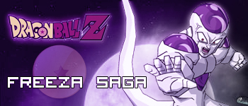

World of Dragon Ball Online

1: Talk with Bulma in Small City.
Porozmawiaj z Bylma w small city.
2: Talk with Namekjin on Namek.
Porozmawiaj z tubylcem na Namek.
3: Fight with Dodoria.
Pokonaj Dodorie.
4: Talk with Bulma on Namek.
Porozmawiaj z Bulma na Namek.
5: Fight with Zarbon.
Pokonaj Zarbona.
6: Talk with Old Namek King.
Porozmawiaj ze starym wodzem nameczan.
7: Fight with Guldo.
Pokonaj Guldo.
8: Fight with Reecome.
Pokonaj Recome.
9: Fight with Copassa.
Pokonaj Copasse.
10: Fight with Capitan Ginyu.
Pokonaj Kapitana sil specjalnych.
11: Fight with Capitan Ginyu in Goku's body.
Pokonaj Kapitana sil specjalnych w ciele Goku.
12: Talk with Nail.
Porozmawiaj z Nailem.
13: Fight with Freeza.
Pokonaj Freeze.
|